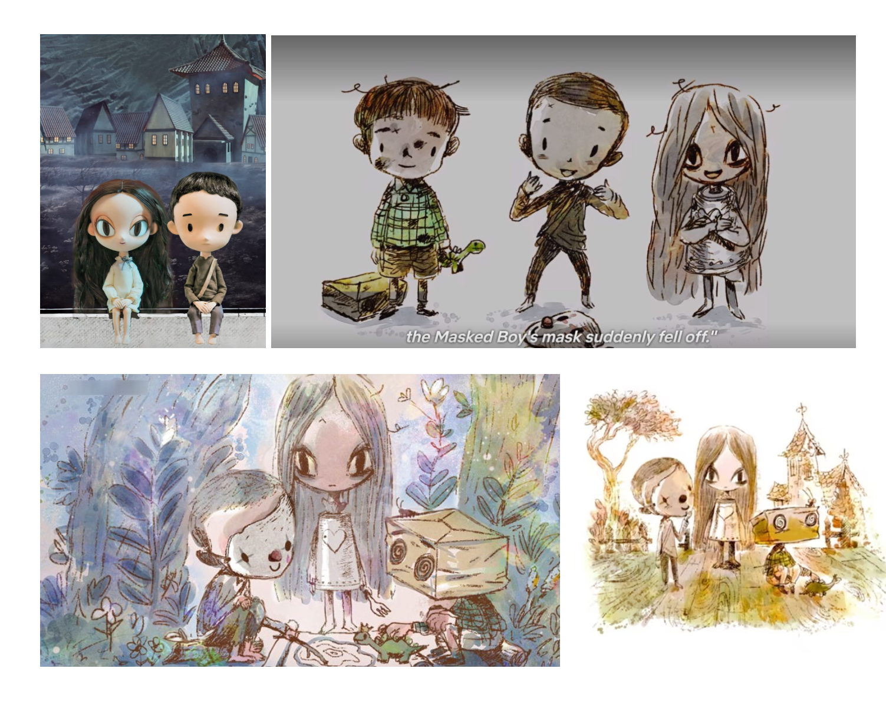
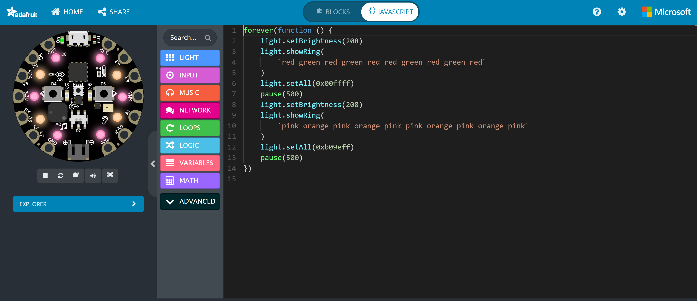

Our topic: Book bans.
What are book bans? It's a form of censorship, it’s when organizations, governments, and individuals remove books from libraries or restrict access because they don’t approve of the content.
Book bans are caused by the following groups:
Story structure:
Start- Kiki, is a young brown girl living in her home nation Ulistan while it is under Silish colonization. The new Silish Government is corrupt, they attempt to remove Ulistani culture from Ulistan and replace it with Silish culture by banning literature and other forms of media and setting behavioral standards and rules for the younger generations.
Escalate- Kiki’s childhood was always filled with Ulistani traditions and stories but as she grows older, she notices everything relating to her identity is being erased by the Silish colonizers. It gets to the point where whole libraries, schools, universities and archives are demolished. Kiki is forced to live a life that does not suit her, she only reads the books she’s allowed to read, and in this way, she continues to pretend to live as a Silish person.
End- Kiki realizes that this is not the life she wants and that she doesn’t like feeling uncomfortable in her own skin so she defies the rules set by the new government by secretly stealing and hiding away the remaining Ulistani-related books in her local library before it’s fully destroyed. With these sacred texts, she teaches the neighborhood kids about Ulistan’s history and culture, this leads to the younger kids finding a pathway to their identities and Kiki finding her own identity as well.
Change- The change from Kiki’s young uncertain self to a defiant and strong-willed character is part of the development used to show the importance behind not banning books and why literature is so crucial.
Narrative- I want the audience to acknowledge the importance of literature, a lot of people take books and the ability to read for granted. Even though, some might think it's a weird and unimportant topic, literature is a reflection of us as humans. Other countries have corrupt governments that limit people’s education and ban books to insert a form of control while we sit here being able to access all kinds of literature. I want people to be able to relate to exploring different types of media to form a connection with their identities and understand how crucial it is for us to feel significant in our own lives to prevent anything bad from happening to ourselves or the people around us.
Series of Events:

Inspiration Pictures:

Clay Figure:
Technology and Code: Our group did not feel the need to use MakeCode technology and lights in our animation but nonetheless, I made a code titled "Season Lights." The Lights on the device are programmed to switch from a set of 10 warm colors to 10 cool colors then back to a different set of 10 warm colors and finally a different set of cool colors. This loop goes on forever to indicate the change in seasons.
